Learning Objectives
- Name the four events of a base-level cycle and explain which of them depend on base level alone and which also depend on sediment supply
- Link each of the seven sequence stratigraphic surfaces to the event or stage during which it forms
- Describe each surface by the type of contact and by the facies and depositional trends below and above it
- Use stratal terminations (truncation, toplap, onlap, downlap, offlap) to read a cross-section
- Explain why surfaces cut by erosion during a whole stage are diachronous, while surfaces that record one event are close to time lines
- Recognise composite contacts, where a younger surface has reworked an older one, and name them correctly
- Distinguish sequence stratigraphic surfaces from within-trend facies contacts
- Explain why the choice of sequence boundary is a convention, and why the maximum flooding surface and the subaerial unconformity are never the same surface
Part I: From Shoreline Shifts to Surfaces
1. The shoreline writes the stratigraphy
In Module 1 the shoreline moved in three ways: normal regression (forward and up, sedimentation outpaces a slow rise of base level), forced regression (forward and down, base level falls) and transgression (backward and up, the rise outpaces sedimentation). Figure 1 runs the same kind of forward model through one full cycle of base level. The colours show what the shoreline was doing while each package accumulated; the thick line is the shoreline trajectory.
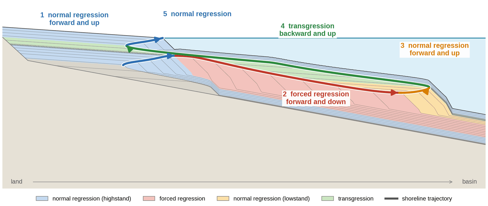
Click to open full resolutionThe idea behind this module
A sequence stratigraphic surface forms where the shoreline trajectory changes direction, or where the shoreline erodes the land or the sea floor on its way. Count the changes of direction in Figure 1: there are four.
2. One cycle, four events
Sequence stratigraphic surfaces are defined relative to two curves: one describing base-level changes at the shoreline, and one describing the shoreline shifts, the transgressive–regressive (T–R) curve (Catuneanu, 2006, Figs 4.5 and 4.6). The T–R curve results from the interplay between sedimentation and base-level change at the shoreline. Four events are recorded during a full cycle (Catuneanu, 2006, p. 110):
| Event | What changes |
|---|---|
| 1 Onset of forced regression (onset of base-level fall at the shoreline) | From sedimentation to erosion or bypass in the fluvial to shallow-marine environments |
| 2 End of forced regression (end of base-level fall at the shoreline) | From degradation to aggradation in the fluvial to shallow-marine environments |
| 3 End of regression (during base-level rise at the shoreline) | The shoreline turns from regression to transgression |
| 4 End of transgression (during base-level rise at the shoreline) | The shoreline turns from transgression to regression |
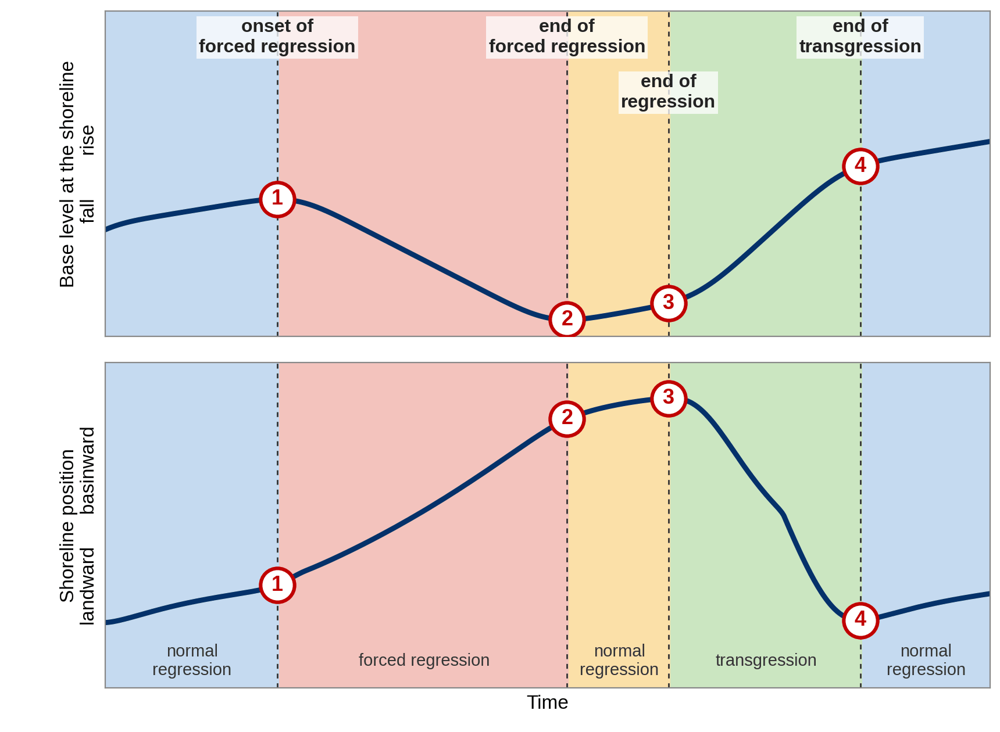
Click to open full resolutionTwo kinds of event
Events 1 and 2 are turning points of base level at the shoreline. Events 3 and 4 are turning points of the shoreline, and they depend on sediment supply as much as on base level: they occur when the rate of base-level rise and the sedimentation rate overtake each other. Change the sediment supply and events 3 and 4 move in time; events 1 and 2 do not. The base-level curve in Figure 2 is drawn simply for convenience; real curves are likely to be asymmetrical (Catuneanu, 2006, caption of Fig. 4.5).
3. Four events, seven surfaces
“These four events control the formation of all sequence stratigraphic surfaces” (Catuneanu, 2006, p. 110). Reading down the table is reading forward in time.
| When | Surface | What it is |
|---|---|---|
| 1 Onset of forced regression | BSFR basal surface of forced regression | The sea floor at the onset of the fall |
| during forced regression | SU subaerial unconformity RSME regressive surface of marine erosion | Erosion or non-deposition on land Wave scour under the shoreface |
| 2 End of forced regression | CC correlative conformity | The sea floor at the end of the fall |
| 3 End of regression | MRS maximum regressive surface | The depositional surface when the shoreline turns landward |
| during transgression | TRS transgressive ravinement surfaces (wave, tidal) | Wave and tidal scour of the retreating coast |
| 4 End of transgression | MFS maximum flooding surface | The depositional surface when the shoreline turns basinward |
The wave- and tidal-ravinement surfaces are counted as one pair, which gives seven surfaces (Catuneanu, 2006, Figs 4.7 and 4.8). Each of them can serve, at least in part, as a systems tract or sequence boundary; that is the attribute that separates them from any other mappable surface. BSFR, CC, MRS and MFS record one moment of the cycle and are close to time lines (event-significant surfaces). SU, RSME and the ravinement surfaces are cut while the shoreline moves, so their age changes from place to place (stage-significant surfaces; Module 4, Figure 5).
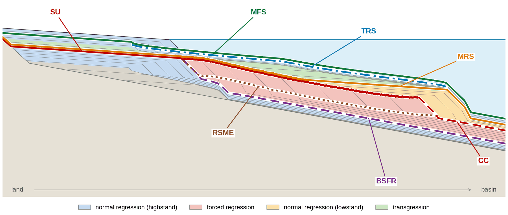
Click to open full resolution4. What ends against a surface?
In Module 4, two observations decided every surface: the type of contact and the facies across it. On a cross-section, a large outcrop or a seismic line there is a third: how strata terminate against the surface (Figure 4). You will need these five terms to read the cross-section of the exam.
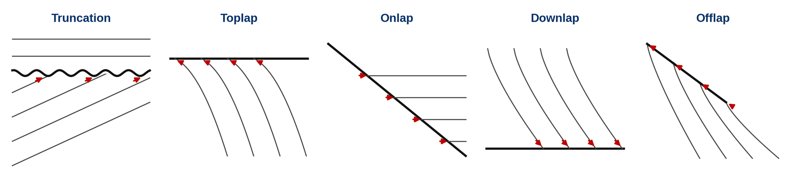
Click to open full resolution| Stratal termination | Shoreline shift | Base level |
|---|---|---|
| Truncation, fluvial | forced regression | fall |
| Truncation, marine | forced regression, transgression | fall, rise |
| Toplap | regression | stillstand |
| Apparent toplap | normal regression, forced regression | rise, fall |
| Offlap | forced regression | fall |
| Onlap, fluvial | normal regression, transgression | rise |
| Onlap, coastal | transgression | rise |
| Onlap, marine | transgression | rise |
| Downlap | normal regression, forced regression | rise, fall |
Table after Catuneanu (2006), Fig. 4.3. Exceptions occur: fluvial incision may also take place during base-level rise and transgression. One rule is very useful in practice: strata below a conformable surface do not terminate against it, because a conformity tends to parallel the bedding of the underlying deposits; they may terminate against a younger unconformity, by truncation or toplap. Strata above may onlap or downlap either kind of surface (Catuneanu, 2006, p. 108).
Part II: Surfaces of Base-Level Fall
5. What the fall leaves behind
Figure 5 stops the model at the end of the fall. The blue package is the highstand. The sea floor at the moment base level began to fall is the BSFR. During the fall the shoreline was forced basinward and downward and left the red, forced regressive package: each increment lies lower than the one before (offlap), and there is no topset, because the land is a zone of erosion or bypass. Everything that is exposed at this moment is the subaerial unconformity, which has grown basinward during the fall and now has its maximum extent. At the shoreline it passes into the sea floor of this moment, the correlative conformity. The fourth surface, the RSME, lies at the base of the shoreface sands inside the red package.
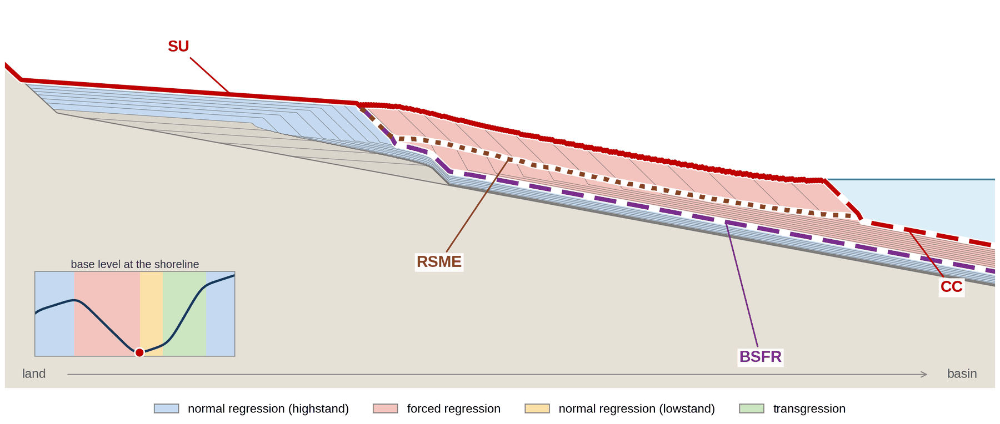
Click to open full resolution6. Subaerial unconformity (SU)
The subaerial unconformity is a surface of erosion or non-deposition created generally during base-level fall by subaerial processes such as fluvial incision, wind degradation, sediment bypass or pedogenesis. It gradually extends basinward during forced regression and reaches its maximum extent at the end of forced regression (Catuneanu, 2006, p. 112). Subaerial unconformities correspond to the largest stratigraphic hiatuses in the rock record, separate strata that are genetically unrelated, and mark abrupt basinward shifts of facies.
Below and above. The facies below are variable. The strata above are always nonmarine. In the rock the surface has two faces: an erosional valley floor overlain by fluvial deposits (Figure 6), and, on the interfluves between the valleys, a surface of sediment starvation and soil development (Figure 7).
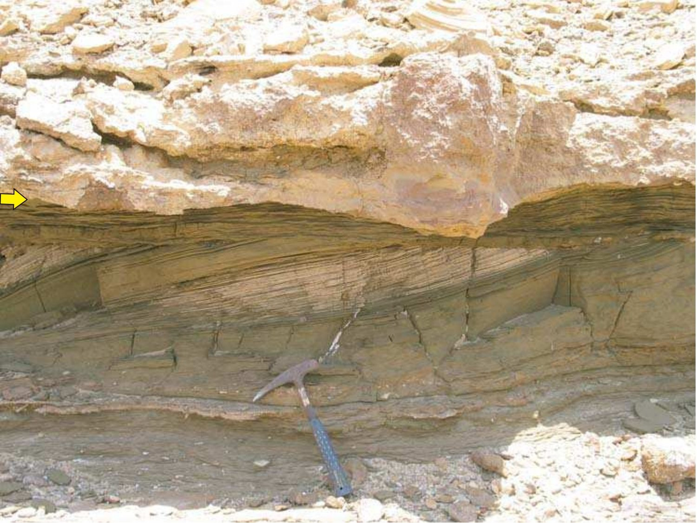
Click to open full resolution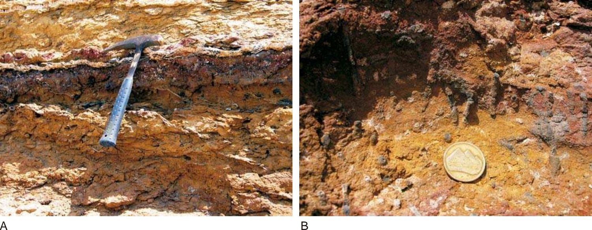
Click to open full resolutionWhat it is good for
The largest time gaps in the record lie on subaerial unconformities, which is why they are used as the sequence boundary on land in the depositional sequence. The valleys cut into them are later filled with sediment. In a succession of floodplain claystone the surface is a paleosol: if you log lithology only, you will miss it.
7. Two sea floors: BSFR and correlative conformity
The basal surface of forced regression (term of Hunt & Tucker, 1992) is the base of all deposits that accumulate in the marine environment during forced regression: the sea floor at the onset of the fall. On a seismic line it is the oldest clinoform associated with offlap. The correlative conformity forms within the marine environment at the end of base-level fall at the shoreline and approximates the sea floor at the end of forced regression, which is the youngest clinoform associated with offlap (Catuneanu, 2006). Landward it meets the subaerial unconformity at the position of the shoreline at the end of the fall.
Both are conformable, with marine deposits below and above, and on the shelf the succession coarsens upward across them (Catuneanu, 2006, Fig. 4.9). In a single core there is often no lithological contrast: they are found from geometry, by recognising the offlapping package between them, and by tracing the correlative conformity basinward from the end of the subaerial unconformity. Both have a low diachroneity along dip. The sea floor at the end of the fall has a high preservation potential, because it is followed by base-level rise, when aggradation is the prevalent trend; the sea floor at the onset of the fall may be scoured during the fall that follows.
One name, two surfaces
“Correlative conformity” is used for two different surfaces. Posamentier et al. (1988) placed it at the onset of the fall: their correlative conformity is the BSFR of this course. Hunt & Tucker (1992) placed it at the end of the fall: that is the correlative conformity of this course, following Catuneanu (2006). When you read a paper, check which one the authors mean.
Going deeper: the BSFR in deep water
In deep water the BSFR is commonly taken at the base of the submarine fan complex, where gravity-flow deposits overlie pelagic sediments (Figure 8). This is an approximation. The first gravity flows reach a given place depending on physiography and sediment supply, so the base of the fan may be younger, even much younger, than the onset of the fall (Catuneanu, 2006, p. 127); Catuneanu puts the name of the surface in quotation marks in the caption of his Fig. 4.27 for this reason. Falling-stage turbidites are sand-prone potential reservoirs, and the systems tracts below and above may provide source and seal facies (Catuneanu, 2006, Chapter 5).
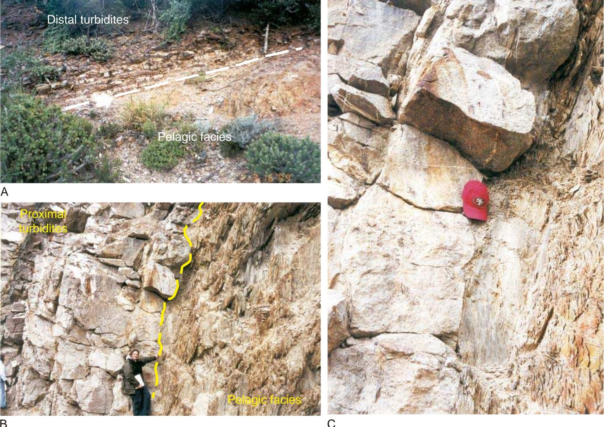
Click to open full resolution8. Regressive surface of marine erosion (RSME)
On a wave-dominated coast the shoreface profile is in equilibrium with the wave energy. When base level falls, this profile is preserved by coeval sedimentation in the upper shoreface and erosion in the lower shoreface (Figure 9). The scour migrates basinward with the shoreline, and the prograding shoreface sand comes to rest directly on it. The result is a sharp-based shoreface: shelf deposits below, shoreface sandstone above, without the gradational transition of a normal prograding shoreface (Figure 10).
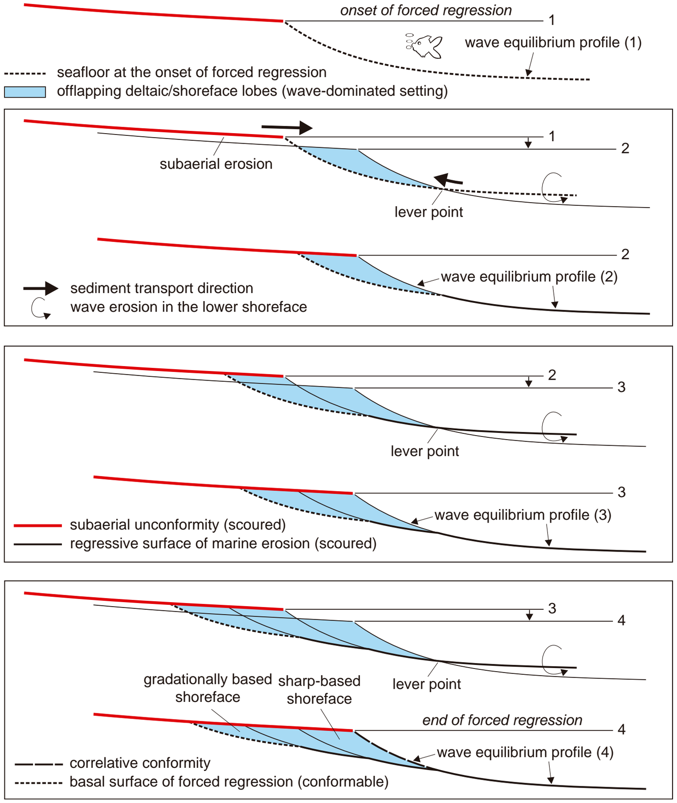
Click to open full resolution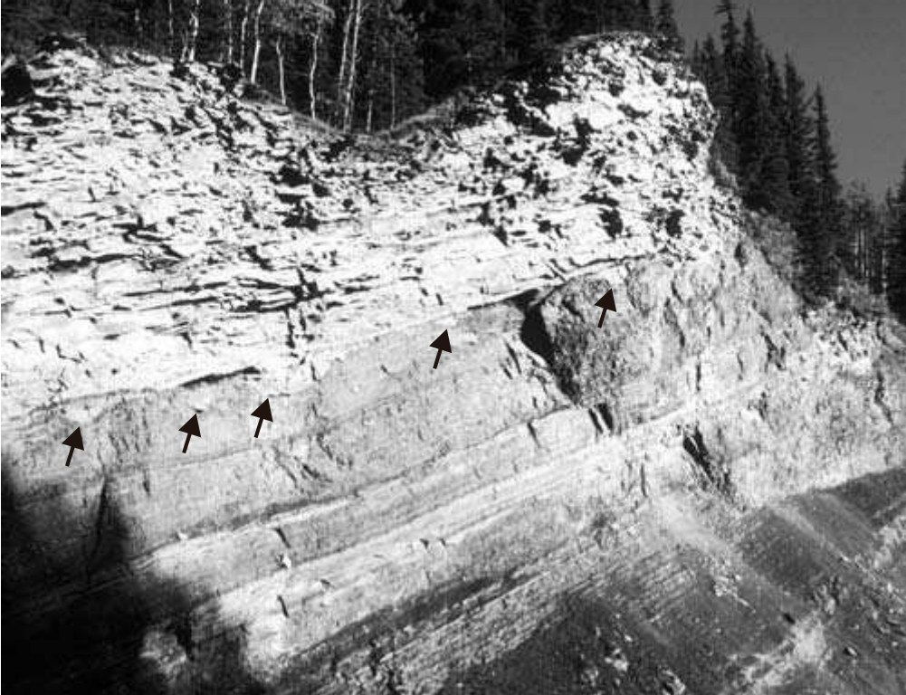
Click to open full resolutionIn the rock: a scoured contact, commonly with the Glossifungites ichnofacies (Catuneanu, 2006, Fig. 4.9); gutter casts filled with hummocky cross-stratified sand may occur in the shelf facies below (Catuneanu, 2006, Fig. 4.30). What it is good for: it is evidence of base-level fall that can be seen in a single core. What it is not: a time line. It forms throughout the fall and is highly diachronous, younger in a basinward direction.
A sharp base needs a wave-dominated coast
The scour forms where the sea floor is flatter than the wave equilibrium profile. In front of river-dominated deltas the clinoforms are steeper than that profile, no wave scouring affects the sea floor during forced regression, the BSFR is preserved, and the forced regressive shoreface is gradationally based (Catuneanu, 2006, Fig. 4.26). A sharp-based shoreface is good evidence of base-level fall; a gradationally based one is not evidence against it.
Going deeper: gradationally based and sharp-based in the same system
Even on a wave-dominated shelf, not all forced regressive deposits are sharp-based. Figure 11 follows a falling stage in four steps. The shallow-marine forced regressive deposits may include a gradationally based shoreface, underlain by the BSFR; a sharp-based shoreface, underlain by the RSME; and shelf facies, gradationally based and underlain by the BSFR (Catuneanu, 2006, caption of Fig. 4.23). Which of them a well finds depends on where it is drilled along the profile.
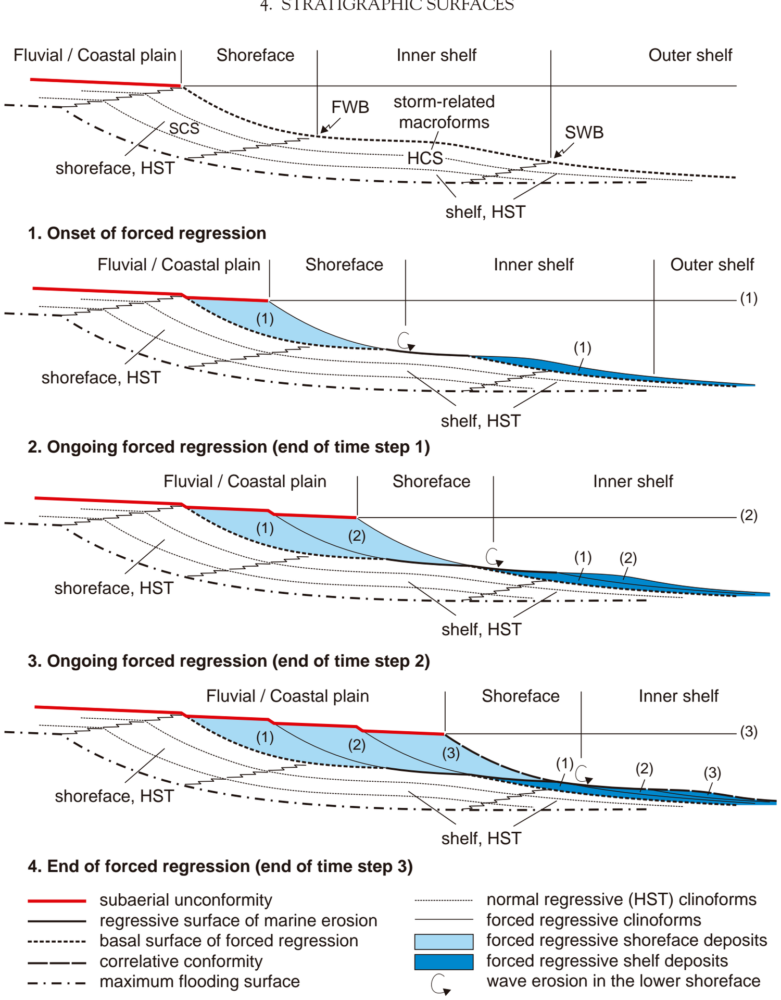
Click to open full resolutionCase study: a forced regression of the Holocene
On Melville Island (Arctic Canada), post-glacial isostatic rebound raises the land, so relative sea level falls at the shoreline (Module 3). Figure 12 shows the result: upper shoreface sands separated from the underlying shelf sediments by a regressive surface of marine erosion (arrows). On aerial photographs the offlapping lobes are detached and parallel to each other, marking successive positions of the paleoshoreline; they are elongated sand bodies left behind at progressively lower elevations, and they are now subject to subaerial erosion (Catuneanu, 2006, caption of Fig. 4.31).
The lesson: a forced regression needs a fall of relative sea level at the shoreline. It does not need a eustatic fall.
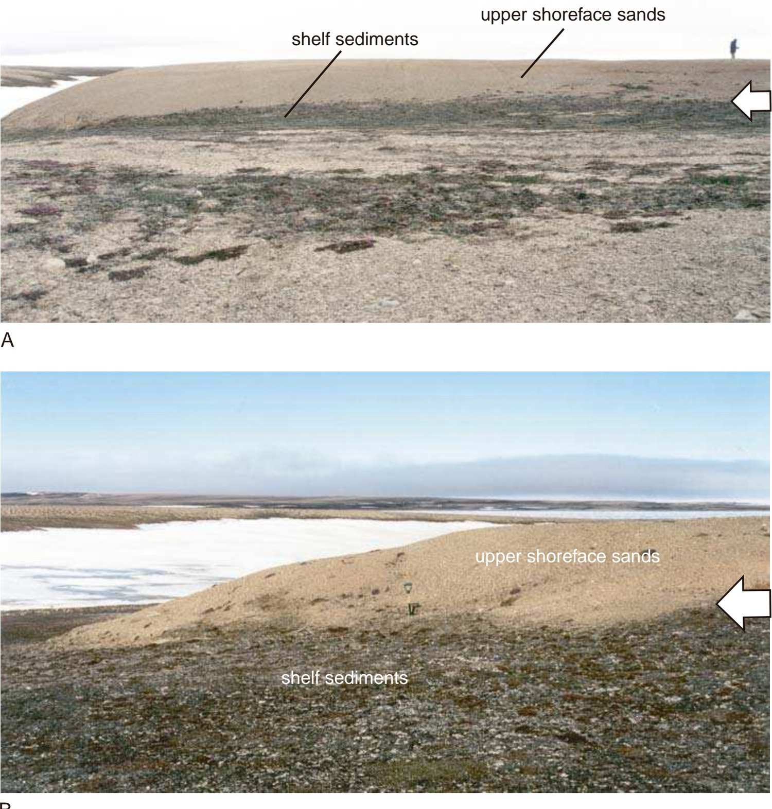
Click to open full resolutionPart III: Surfaces of Base-Level Rise
Base level rises during this whole part. What changes is which rate is higher, the rise or the sedimentation. That gives two turning points of the shoreline and one erosion surface between them.
9. Lowstand and the maximum regressive surface (MRS)
When base level starts to rise slowly, sedimentation still outpaces it and the shoreline keeps moving basinward, now climbing: the lowstand normal regression (Figure 13). Unlike the forced regressive package it has a topset, and its fluvial deposits onlap the subaerial unconformity landward. How far they extend depends on basin physiography, on the duration of the lowstand normal regression and on the rates of fluvial aggradation (Catuneanu, 2006). Where they do not reach, the MRS lies directly on the subaerial unconformity.
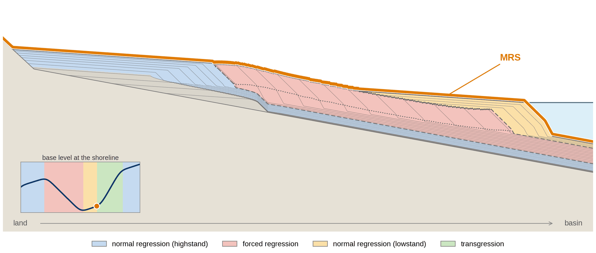
Click to open full resolutionThe maximum regressive surface marks the change from shoreline regression to subsequent transgression: prograding strata below, retrograding strata above. It is generally conformable. In shallow-marine successions it is placed at the top of a coarsening-upward trend (Figure 14). It has a low diachroneity along dip. It is also known as the transgressive surface (Posamentier & Vail, 1988) and by several other names (Catuneanu, 2006, p. 142).
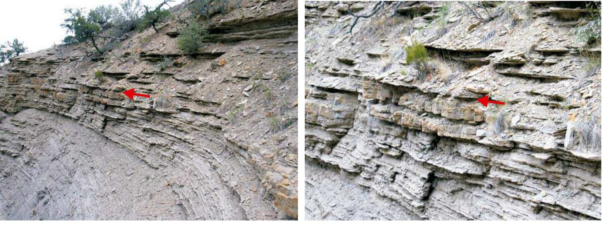
Click to open full resolution10. Transgression and the ravinement surfaces
When the rise outpaces sedimentation the shoreline moves landward (Figure 15). The transgressive deposits come in two parts: coastal-plain and estuarine deposits landward, and a thin marine wedge on the shelf. As the shoreface retreats, waves scour what they pass over; in estuaries, tidal currents do the same. These scours are the transgressive ravinement surfaces.
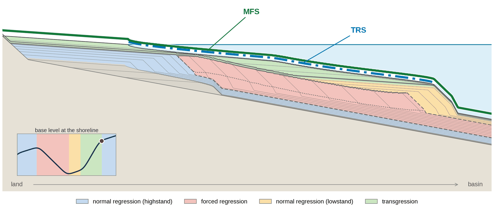
Click to open full resolutionThe wave-ravinement surface (Swift, 1975) is cut by waves in the upper shoreface during transgression. Any facies may lie below it; transgressive marine deposits lie above it and onlap it landward (coastal onlap). It is commonly marked by a transgressive lag (Figure 16). This erosion may remove as much as 10–20 m of substrate (Demarest & Kraft, 1987; Abbott, 1998, in Catuneanu, 2006). The surface is highly diachronous, younger in a landward direction.
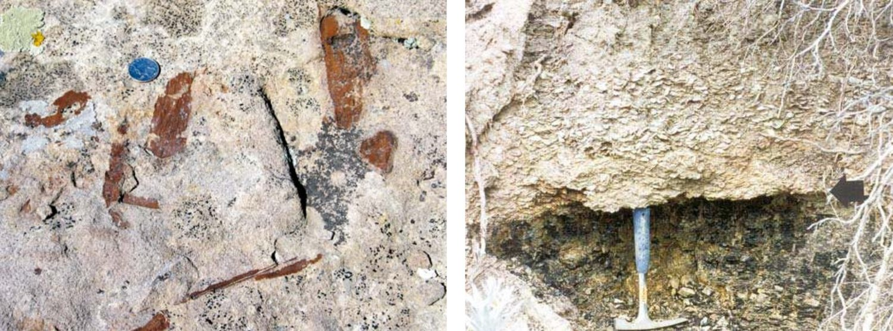
Click to open full resolutionIn open-shoreline settings the wave- and tidal-ravinement surfaces are often superimposed. In river-mouth settings they may be separated by the deposits of the estuary-mouth complex (Catuneanu, 2006, Fig. 4.7). Figure 17 shows a complete case: from the valley floor upward, the subaerial unconformity, coarse lowstand fluvial deposits, the MRS, tidal estuarine sand and mud, the tidal-ravinement surface, the estuary-mouth complex, the wave-ravinement surface with its lag, the MFS and the prograding highstand. Figure 18 shows a less complete one, where the tidal-ravinement surface has removed the lowstand deposits.
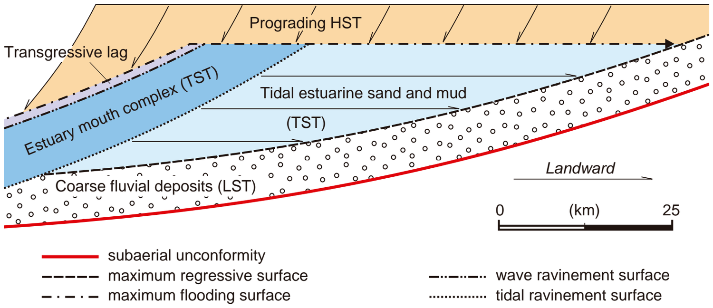
Click to open full resolution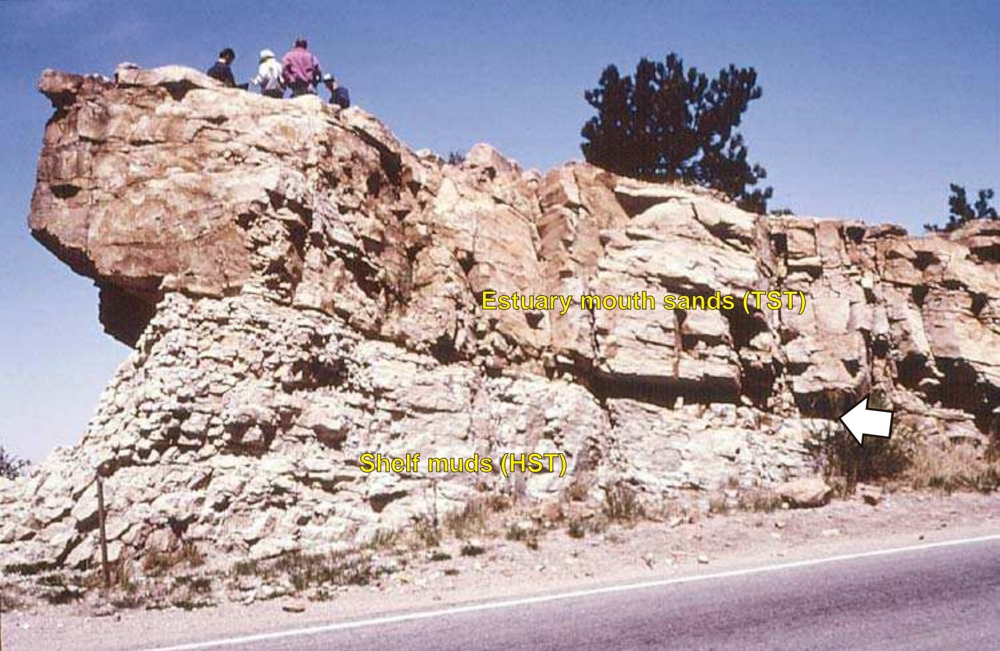
Click to open full resolutionThe most tempting miscorrelation
A transgressive lag is easy to recognise in every well, which makes it tempting to correlate. The surface below it follows the shoreline and has a different age in every place. Use it to explain missing section, not as a time line.
11. Maximum flooding surface (MFS)
The maximum flooding surface (Frazier, 1974; Posamentier et al., 1988; Van Wagoner et al., 1988; Galloway, 1989) marks the end of shoreline transgression: retrograding strata below, prograding strata above. The highstand clinoforms downlap onto it, so on seismic data it is also known as the downlap surface. It is generally conformable, except on the outer shelf and upper slope, where sediment starvation may leave the sea floor exposed to erosion. It lies at the heart of areally extensive condensed sections, which form when the shoreline reaches its maximum landward position and consist dominantly of fine-grained, hemipelagic to pelagic deposits; they may contain glauconite and/or siderite, and the surface is often associated with firmgrounds or hardgrounds (Catuneanu, 2006, pp. 143–146).
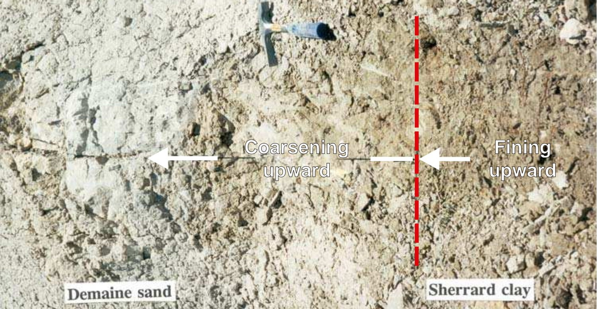
Click to open full resolutionMaximum flooding surfaces “are arguably the easiest stratigraphic markers to use for the subdivision of stratigraphic successions, especially in marine to coastal plain settings” (Catuneanu, 2006, p. 143), and they have a low diachroneity along dip. Note the paradox in Figure 19: the condensed section is easy to find and to correlate, while the exact surface inside it can be hard to pinpoint.
Three cautions
Not the deepest water. The top of the fining-upward, retrograding marine facies does not necessarily correspond to the peak of deepest water, which is usually recorded within the overlying highstand deposits. Describe what you observe (coarsening- vs fining-upward), not what you infer (shallowing vs deepening) (Catuneanu, 2006, p. 145).
Harder on land. In fully fluvial successions the position of the MFS may be indicated, for example, by an abrupt increase in fluvial energy, from meandering to overlying braided systems (Catuneanu, 2006); in the Po Plain it is traced into lagoonal and swamp deposits (below).
Not the subaerial unconformity. The MFS forms during base-level rise, the SU during base-level fall. They are never the same surface (Part IV, section 17).
Case study: the Po Plain, the last glacial cycle
In the Po Plain–Adriatic system (Amorosi, Maselli & Trincardi, 2016) the late Quaternary succession is dated, so the surfaces can be checked against measured ages. At the southern margin of the Po channel belt (Figure 20), a paleosol formed at the onset of the Last Glacial Maximum is interpreted as the sequence boundary; it is laterally associated with amalgamated fluvial sand bodies. The paleosols of latest Pleistocene age are weakly developed and bound packages a few metres thick that can be tracked over tens of kilometres. The lowstand systems tract is dated at about 30–18 cal kyr BP. The transgressive surface (the MRS of this course) largely coincides with a prominent paleosol of Younger Dryas age at the Pleistocene–Holocene boundary. Above the lowstand channel belt, transgressive deposits backstep and highstand deposits forestep; the MFS marks the inversion from a retrogradational to a progradational architecture.
In cores (Figure 21) none of these surfaces is spectacular. The ravinement surface is an erosional surface overlain by a veneer of mollusc-rich sand that separates back-barrier deposits (lagoon, washover) from shallow-marine deposits (transgressive shoreface to offshore). Landward of the maximum shoreline transgression, in back-barrier positions, the MFS coincides with bay or lagoonal deposits rich in Cerastoderma glaucum between freshwater swamp clays; farther updip, within nonmarine facies, it is traced at the base of laterally extensive paludal and poorly drained floodplain horizons. The same surface changes its appearance completely along the depositional profile.
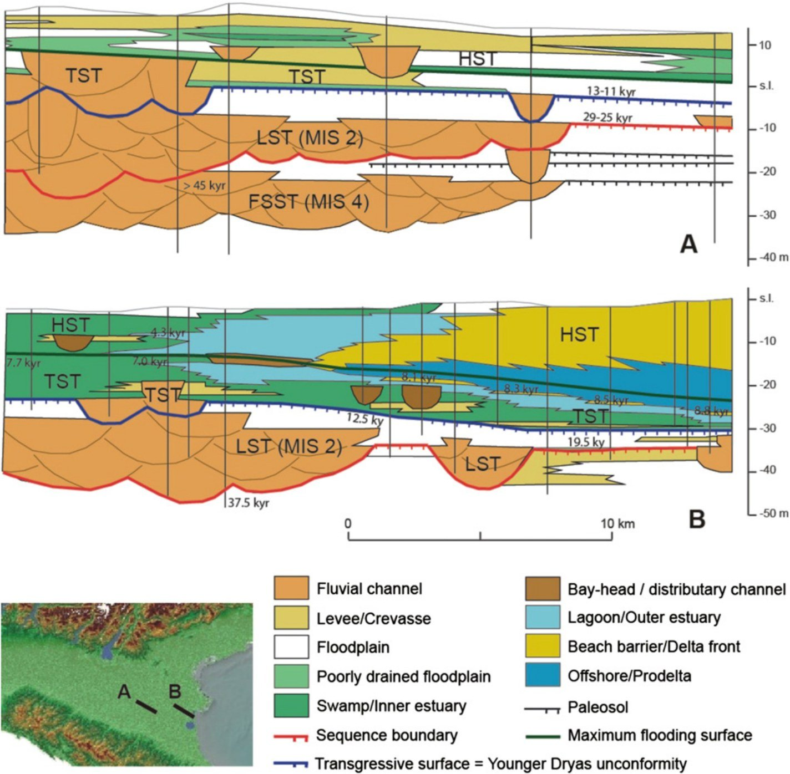
Click to open full resolution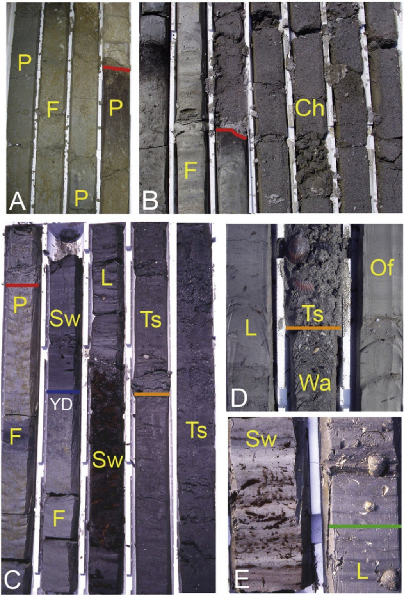
Click to open full resolutionCase study: one sharp-based sandstone, three possible surfaces
The Viking Formation in the Joffre field (Alberta) contains a sandstone body resting on an erosional discontinuity, BD-1, which is incised into underlying marine parasequences, truncates up to three of them and is commonly demarcated by the Glossifungites ichnofacies. MacEachern, Zaitlin & Pemberton (1999) studied 72 cored intervals and about 700 well logs. Incised shorefaces may be produced by forced regressive, lowstand or transgressive scenarios (Figure 22): (1) a forced regressive shoreface resting on a regressive surface of erosion (the RSME of this course); (2) a lowstand shoreface on the sequence boundary; (3) a shoreface that prograded during a pause in transgression, on top of a transgressive ravinement surface (a transgressively incised shoreface).
In a single core the three look alike. The authors separated them by following the surface basinward. In weakly storm-influenced shorefaces, the regressive surface of erosion and the sequence boundary pass into non-erosional correlative conformities seaward of fair-weather wave base. At Joffre, BD-1 remains erosional in distal positions, even where it is overlain by facies deposited below fair-weather wave base. That is inconsistent with scenarios 1 and 2. Their interpretation: a sequence boundary that was transgressively modified, and a transgressively incised shoreface.
The method is the point: the answer came from following one surface along the depositional profile, not from one core.
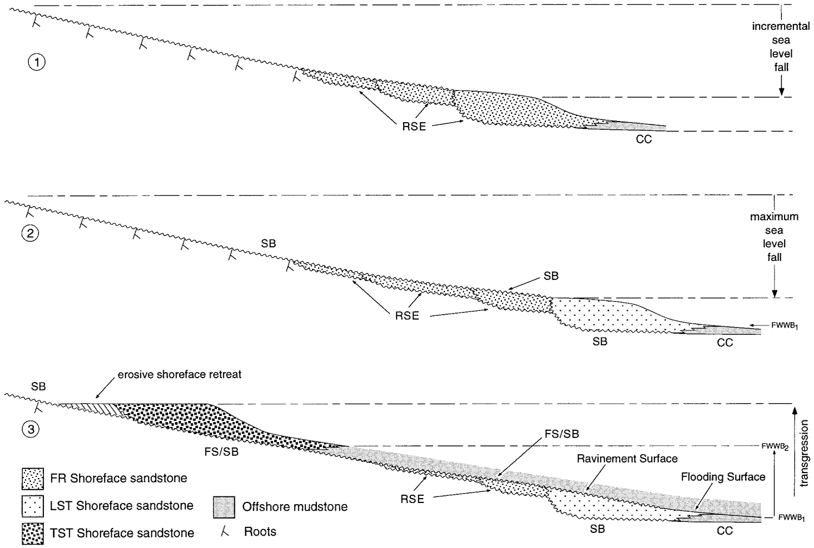
Click to open full resolutionPart IV: Working With the Surfaces
12. Surfaces merge: name the youngest
In real successions the seven surfaces rarely come one by one (Figure 23). A: where lowstand fluvial deposits are thin or absent, the MRS lies directly on the subaerial unconformity. B: where the transgressive ravinement cuts down to the subaerial unconformity, the soil and whatever lay on it are removed, and marine deposits with a lag rest on one composite contact. C: on a starved outer shelf the ravinement surface and the MFS lie close together. D: on the basin floor all surfaces are conformable and lie within a thin, fine-grained interval.
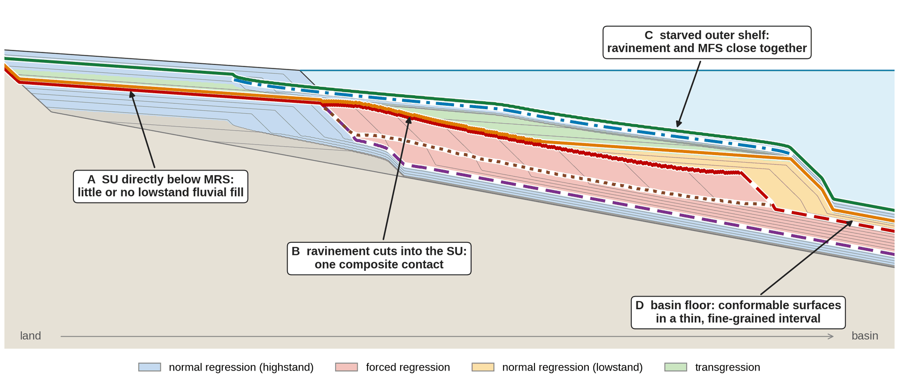
Click to open full resolutionThe naming rule
A subaerial unconformity may be reworked, and replaced, by younger stratigraphic surfaces. The contact is then described using the name of the youngest preserved surface, which imposes its attributes on it (Catuneanu, 2006, p. 114). At place B you log a transgressive ravinement surface, and add in your interpretation that it has replaced the subaerial unconformity and carries the sequence boundary there. Consequence: the same sequence boundary can be a paleosol in one well, a valley floor in the next and a marine lag in a third.
13. Seven surfaces at a glance
| Surface | Contact | Below → above | Along dip | Good for |
|---|---|---|---|---|
| SU subaerial unconformity | scoured or bypass | variable → nonmarine | variable hiatus | sequence boundary on land; valley fills |
| CC correlative conformity | conformable | marine → marine | low diachroneity | sequence boundary in the basin |
| BSFR basal surface of forced regression | conformable or scoured | marine → marine | low diachroneity | base of forced regressive deposits |
| RSME regressive surface of marine erosion | scoured | shelf → shoreface | high diachroneity, younger basinward | evidence of base-level fall |
| MRS maximum regressive surface | conformable | where marine: coarsening-up → fining-up | low diachroneity | end of regression; correlation |
| TRS transgressive ravinement surfaces | scoured | variable → marine (wave) or estuary-mouth complex (tidal) | high diachroneity, younger landward | lags; explains missing section |
| MFS maximum flooding surface | conformable or scoured | where marine: fining-up → coarsening-up | low diachroneity | regional marker; condensed section |
Simplified from Catuneanu (2006), Fig. 4.9; the temporal attributes are valid for dip-oriented sections. Read the table by rows to revise, and by columns when you are in front of the rocks: is the contact scoured or conformable; what lies below and above; which trend below and above.
Contact helper: which surface could it be?
Choose what you observe. The helper applies the table above; it suggests candidates, it does not replace the reasoning.
14. Facies contacts are not surfaces
Some contacts are sharp, mappable and easy to correlate, and are still not sequence stratigraphic surfaces. Catuneanu (2006, Fig. 4.8) calls them within-trend facies contacts: lithological discontinuities within systems tracts, more suitable for lithostratigraphic or allostratigraphic analysis, to be marked on a cross-section only after the sequence stratigraphic framework has been constructed.
| Facies contact | Below → above | Notes |
|---|---|---|
| Within-trend normal regressive surface | delta front or beach → delta plain or fluvial | conformable; highly diachronous, with the rate of shoreline regression |
| Within-trend forced regressive surface | prodelta → delta front | conformable; may only develop in river-dominated deltas |
| Flooding surface (other than MRS, MFS or ravinement surface) | variable; an abrupt change to deeper-water facies | conformable or scoured; low to high diachroneity; the surface that bounds parasequences (Module 4) |
The test
Ask what the shoreline was doing below the contact and above it. If the answer differs, or if the contact was cut by the erosion that accompanies a whole stage, it is one of the seven surfaces. If the answer is the same, it is a facies contact within one trend. A flooding surface may turn out to be an MRS, a ravinement surface or an MFS; if it is none of these, it is a within-trend facies contact.
15. Which surface bounds a sequence?
A sequence is one full cycle of change in depositional trends, and a cycle can be closed at any point as long as it is closed at the same point. Figure 24 shows three choices on the same base-level curve (Catuneanu, 2006, Fig. 4.6): the depositional sequence, bounded by subaerial unconformities and their correlative conformities; the transgressive–regressive (T–R) sequence (Embry & Johannessen, 1992), bounded by maximum regressive surfaces in the marine part and the subaerial unconformity on land; and the genetic stratigraphic sequence (Galloway, 1989), bounded by maximum flooding surfaces. In the depositional sequence of Posamentier et al. (1988) the correlative conformity is the surface at the onset of the fall, which is the origin of the two meanings in section 7.
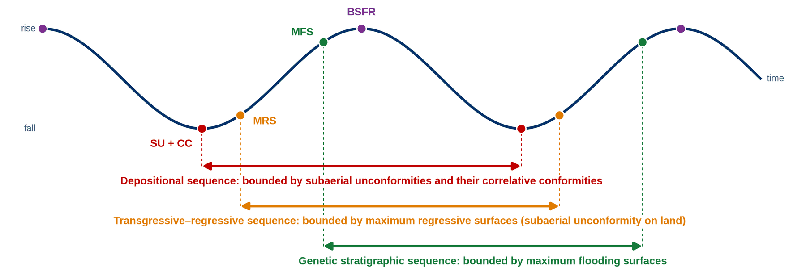
Click to open full resolutionMFS and sequence boundary
The maximum flooding surface is a sequence boundary only if you work with genetic stratigraphic sequences. In a depositional sequence it lies inside the sequence. The subaerial unconformity forms during base-level fall and the maximum flooding surface during base-level rise: if an interpretation puts them at the same place without evidence that one has reworked the other, go back to the trends.
This is what model-independent means in practice (Module 2): first identify all the surfaces the data allow, then choose the one that is best expressed as the sequence boundary, and state the choice.
16. Your turn: three wells
Figure 25 shows the model once more, coloured by facies and without surfaces, with three wells from land to basin. In the logs the horizontal axis is grain size; brown intervals are paleosols with roots.
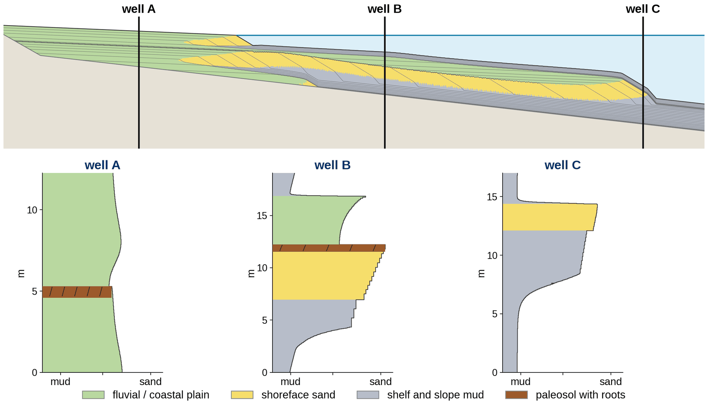
Click to open full resolution- In each well, mark every level where the depositional trend changes or where facies are in sharp contact.
- Name the surfaces. Which of the seven do you expect in each well but cannot see, and why?
- Which contacts would you correlate between the wells first, and which would you not use?
Show one possible solution
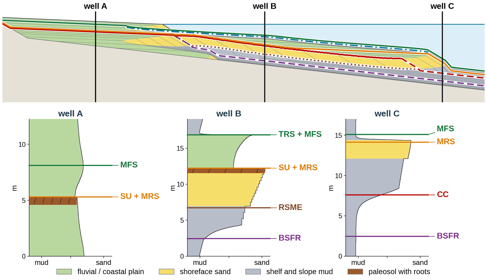
Click to open full resolutionWell A is nonmarine throughout. The paleosol is the subaerial unconformity; the lowstand fluvial deposits did not reach this far, so the MRS lies on the same contact. The MFS lies inside the coastal-plain deposits above and has no expression in this log.
Well B. The BSFR lies within the lower mud, with no expression. The sharp base of the sand is the RSME: a sharp-based shoreface. The paleosol on top of the sand is the SU, again with the MRS. Transgressive coastal-plain deposits follow; the sharp contact with marine mud at the top is the ravinement surface, with the MFS immediately above it, because the shelf was starved.
Well C was under water all the time. BSFR and CC lie within the mud and cannot be seen. The top of the coarsening-upward trend is the MRS; the finest level above it is the MFS. There is no ravinement surface: the shoreline never crossed this position during the transgression.
Correlation. First the MFS, present in all three wells and close to a time line; then the MRS. The SU links A and B, and the CC continues it to C. Do not correlate the sharp base of the sand in B with the base of the sand in C: the first is the RSME, the second a gradational facies change within the lowstand.
Think about it
1. A core shows shelf mudstone, a sharp contact, then shoreface sandstone. Which surfaces could this be, and what would you look for 10 km basinward to decide?
2. You follow a subaerial unconformity seaward and it ends. Which surface continues it, where do the two meet, and why is that surface so hard to find in a core?
3. A colleague correlates a transgressive lag between two wells 30 km apart along dip as a time line. What is wrong with that, and which surface would you use instead?
Key Points Summary
- Four events of the base-level cycle (onset and end of forced regression, end of regression, end of transgression) control the formation of all seven sequence stratigraphic surfaces
- Events 1 and 2 are turning points of base level; events 3 and 4 are turning points of the shoreline and also depend on sediment supply
- Surfaces of the fall: SU on land, RSME under the shoreface of wave-dominated coasts, BSFR and CC as the sea floors at the onset and the end of the fall
- Surfaces of the rise: MRS at the end of regression, ravinement surfaces during transgression, MFS at the end of transgression
- SU, RSME and ravinement surfaces are scoured and diachronous; BSFR, CC, MRS and MFS are mostly conformable and have a low diachroneity along dip
- “Correlative conformity” has two meanings: onset of fall (Posamentier et al., 1988; the BSFR here) and end of fall (Hunt & Tucker, 1992; used here)
- Surfaces merge and replace each other; a reworked contact takes the name of the youngest preserved surface
- Within-trend facies contacts and flooding surfaces are not sequence stratigraphic surfaces unless they coincide with one of the seven
- Which surface is the sequence boundary is a convention; the MFS bounds only the genetic stratigraphic sequence, and it is never the same surface as the SU
Key References
Core reading: Catuneanu, O. (2006) Principles of Sequence Stratigraphy. Elsevier, Amsterdam (Chapter 4, Stratigraphic surfaces, pp. 105–163; start with Figs 4.7 and 4.9)
Case studies: Amorosi, A., Maselli, V., Trincardi, F. (2016) Onshore to offshore anatomy of a late Quaternary source-to-sink system (Po Plain–Adriatic Sea, Italy). Earth-Science Reviews 153, 212–237 • MacEachern, J.A., Zaitlin, B.A., Pemberton, S.G. (1999) A sharp-based sandstone of the Viking Formation, Joffre Field, Alberta, Canada: criteria for recognition of transgressively incised shoreface complexes. Journal of Sedimentary Research 69, 876–892
Surfaces and sequence types (as cited in Catuneanu, 2006): Allen, G.P., Posamentier, H.W. (1993) Sequence stratigraphy and facies model of an incised valley fill: the Gironde estuary, France. Journal of Sedimentary Petrology 63, 378–391 • Embry, A.F., Johannessen, E.P. (1992) T–R sequence stratigraphy, facies analysis and reservoir distribution in the uppermost Triassic–Lower Jurassic succession, western Sverdrup Basin, Arctic Canada. In: Arctic Geology and Petroleum Potential (Vorren, T.O. et al., Eds) • Galloway, W.E. (1989) Genetic stratigraphic sequences in basin analysis, I. Architecture and genesis of flooding-surface bounded depositional units. AAPG Bulletin 73, 125–142 • Helland-Hansen, W., Martinsen, O.J. (1996) Shoreline trajectories and sequences: description of variable depositional-dip scenarios. Journal of Sedimentary Research 66, 670–688 • Hunt, D., Tucker, M.E. (1992) Stranded parasequences and the forced regressive wedge systems tract: deposition during base-level fall. Sedimentary Geology 81, 1–9 • Posamentier, H.W., Jervey, M.T., Vail, P.R. (1988) Eustatic controls on clastic deposition I: conceptual framework. SEPM Special Publication 42, 110–124 • Swift, D.J.P. (1975) Barrier-island genesis: evidence from the central Atlantic shelf, eastern U.S.A. Sedimentary Geology 14, 1–43
Self-Assessment Quiz
Each question asks you to reason, not to recall. Options are shuffled every time the page loads.